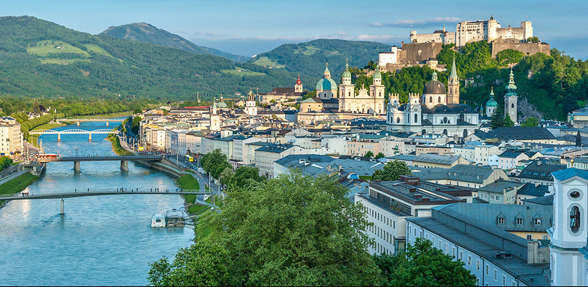
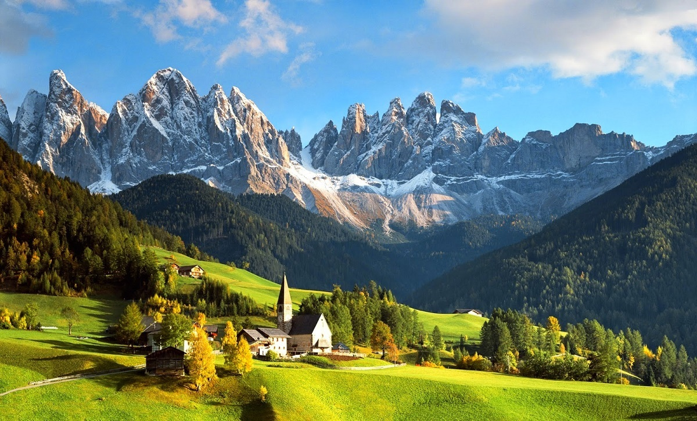
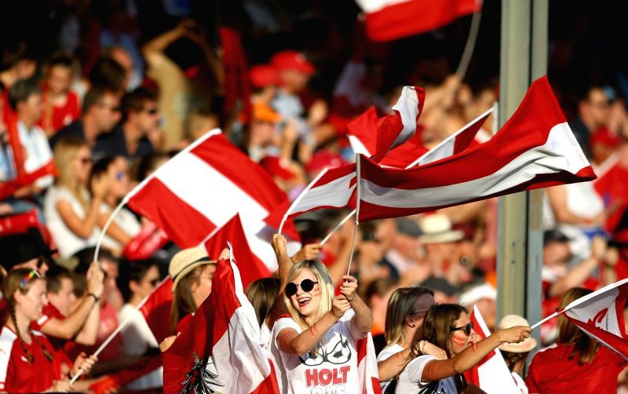
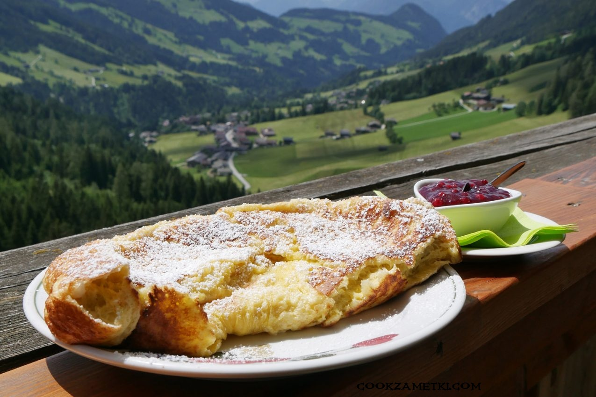
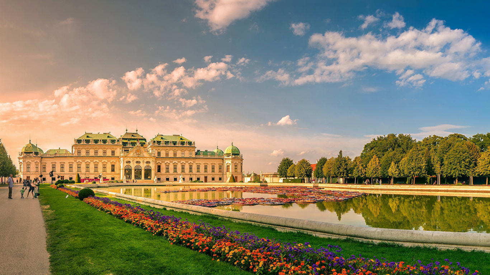
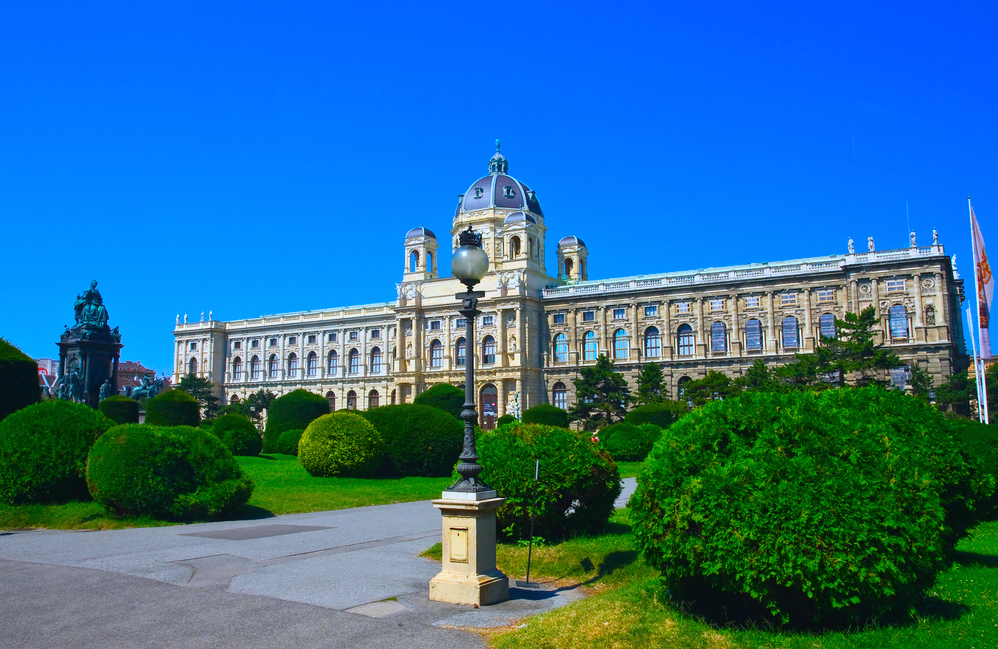

Австрия
География
 Государство в Центральной Европе. Площадь страны 83 871 км². Австрия на 70 % горная страна, средняя высота над уровнем моря составляет около 900 м. Большая часть занята Восточными Альпами, которые в свою очередь подразделяются на Альпы Северного Тироля и Зальцбургские Альпы на севере, Циллертальские и Карнийские Альпы на юге. Высшая точка — гора Гросглоккнер (3797 м), на ней находится и один из крупнейших в Европе ледников Пастерце. Низшая точка — озеро Нойзидлер-Зе (115 м над уровнем моря).Основная территория Австрии расположена в бассейне Дуная, крайний запад относится к бассейну Рейна. Дунай течёт по Австрии на протяжении 350 км. Крупнейшие его притоки: Инн (с Зальцахом), Энс, Драва и Морава. Горные реки отличаются крутым падением, быстрым течением, обладают значительными энергоресурсами. Для них характерен альпийский режим стока с летним половодьем и резко выраженной зимней меженью. В Австрии около 580 озёр, главным образом ледникового происхождения. Их особенно много в северных предгорьях Альп (Аттер, Траун и др.). На границе с Германией и Швейцарией— крупное Боденское озеро(всего — 538,5 км²), на границе с Венгрией — озеро Нёйзидлер-Зе(156,9 км, австрийская часть — 135 км). Горную часть Австрии отличает обилие чистой пресной воды, сосредоточенной помимо ледников и рек в многочисленных альпийских озёрах. В жаркие летние месяцы начинается бурное таяние снегов в горах, что приводит к большим паводкам, в том числе и на Дунае, уровень которого поднимается иногда на 8 — 9 м. Альпийские реки определяют и режим Дуная: особенно многоводным он бывает как раз летом, когда равнинные реки обычно мелеют. Притоки Дуная — Инн, Зальцах, Энс, Драва — таят в себе большие запасы энергии, но все они не судоходны и только частично используются для лесосплава. В стране много озёр, особенно в северных предгорьях Альп и на юге, в Клагенфуртской котловине. Они ледникового происхождения, их котлованы выпаханы древними ледниками; как правило, озера глубоки, с холодной, прозрачной водой.
Климат
 Особенности климата Австрии напрямую зависят от ряда географических факторов, в частности от рельефа.о всей территории Австрии климат умеренный, переходный к континентальному, сильно зависящий от высот.
Как правило лето тёплое, средняя температура в этот период +20ºС. Самые жаркие месяцы - июль и август. По мере изменения высот температура падает и может достигать нулевой отметки, но это происходит гораздо реже, чем в иных альпийских странах. Летом в Австрии сухо, поэтому, несмотря на плохую погоду, температура не имеет резких колебаний.
Зима мягкая: температура на равнинах не опускается ниже -2ºC, в горных же районах она снижается до -14ºС. Самый холодный зимний месяц - январь.
Осадки по всей территории Австрии варьируют от 500 до 3000 мм в год. Горы Альпы, возвышаясь на пути влажных западных ветров, становятся главным конденсатором влаги. Особенно много осадков принимают на себя северные и западные окраинные хребты, где выпадает от 1500 до 3000 мм в год, и преобладает туманная погода. Замкнутые же долины получают меньше влаги, до 1000 мм. Самое большое количество осадков выпадает на высотах около 2000 м.
Население
 Одна из главных особенностей населения Австрии — прекращение его роста с начала 70-х годов. Объясняется это большим падением рождаемости. Если бы не заметно возросшая средняя продолжительность жизни, которая в 1990 году достигла 75 лет, демографическая ситуация была бы ещё более неблагоприятной. Падение рождаемости связано с трудным материальным положением большинства австрийского населения, так и с последствиями Второй мировой войны. Поэтому естественного прироста населения в Австрии почти нет: ежегодно число родившихся и умерших практически одинаково. Небольшой естественный прирост сохранился ещё в менее развитых западных альпийских землях, а также в сельской местности. При этом в Австрии снижается как рождаемость, так и смертность: в 2001 родилось 75,5 тыс., а умерло 74,8 тыс. (по 9,3 %). Небольшое превышение родившихся над умершими в последние годы обеспечивается за счёт иностранцев (+8,2 тыс. против −7,5 тыс. у австрийцев). Детская смертность 4,8 чел. на 1000 живорождённых. Средняя продолжительность жизни 80,5 лет, в том числе 77,7 лет для мужчин и 83,2 года для женщин (2011). По данным 2010 года мужчин 4 086 434 чел., женщин — 4 301 308. Растёт число жителей 60 лет и старше: их доля составляет 23,1 %. Австрийские специалисты предсказывают, что сокращение доли молодых возрастов и повышение доли пожилых грозит уменьшением трудовых ресурсов.
Австрийская Кухня
 Австрийская кухня – национальная кухня государства Австрия, расположенного в Центральной Европе. Австрийская кухня состоит из нескольких составляющих. Ее основу составляет так называемая венская кухня, названная в честь города Вены. Однако на австрийскую кухню большое влияние оказали другие европейские кухни соседствующих территорий – венгерская, чешская, немецкая и итальянская. Согласно некоторым заявлениям историков, также большое влияние на австрийскую кухню оказала еврейская культура. Часть еврейских блюд были заимствованы и адаптированы австрийцами. Австрийцы же любят называть свою кухню не иначе, как Gut burgerliche Kuche, что в переводе означает «Кухня хороших бюргеров», подчеркивая тем самым статусность и некрестьянское происхождение традиционной австрийской кухни.
Эти блюда происходят из всех частей бывшей Дунайской монархии. Они имеют порой курьёзные названия: «Kaiserschmarrn» (Рубцы императора) или «Arme Ritter» (Бедный рыцарь). И это единственная кухня в мире, которая названа по имени города: Венская кухня.
Венская кухня распространилась далеко и собрала для своих гурманов самое лучшее изо всех уголков света: из Милана Cotoletto (котолетто), который сегодня называется Венским шницелем, из Нижней Венгрии – Раlatschinken (палачинкен) – блинчики с начинкой из джема, из Богемии – сытные клёцки, из Альп – дичь, рыбу и ягоды…
Достопримечательности Австрии
Сад Бельведер
Бельведер — дворцовый комплекс в Вене в стиле барокко. Построен Лукасом фон Хильдебрандтом как летняя резиденция для одного из самых великих полководцев своего времени принца Евгения Савойского в начале XVIII века. После смерти принца Бельведер выкупила Мария Терезия. Правда, Бельведер и затем довольно долго был в запустении, так как венценосная владелица решила и далее использовать Шенбрунн в качестве своей летней резиденции.
Расположен в Ландштрассе, третьем районе города, к юго-востоку от центра.
Верхний и Нижний Бельведеры вместе с разбитым вокруг садом образуют великолепный барочный ансамбль. В настоящее время в двух дворцах разместилась Австрийская галерея.
25 марта 1941 года в главном зале Бельведера был подписан Венский протокол о присоединении Югославии к Берлинскому пакту 1940 года.
15 мая 1955 года в Верхнем Бельведере состоялось подписание Декларации независимости Австрии.
Архитектор Лукас фон Хильдебрандт построил своего рода "маленький Версаль". Архитектура и все оформление дворцов подчинялись определенной идее: в ансамбле должны были воплотиться воинская слава и духовное величие знаменитого полководца и мецената. По мнению современников, Хильдебрандт блестяще выполнил свою задачу.

Площадь Марии Терезии
Площадь Марии Терезии — площадь в центре Вены, во Внутреннем Городе на Рингштрассе, напротив площади Хельденплац и Хофбурга. На площади друг напротив друга расположены два самых крупных музейных здания города — Музей истории искусств и Музей естествознания. Площадь замыкает параллельный Рингштрассе проспект Цвайер-линия, «Линия второго», где когда-то курсировал венский трамвай № 2. С другой стороны Цвайер-линии располагается Музейный квартал. В центре площади Марии Терезии установлен памятник императрице, самый крупный из установленных Габсбургам в Вене. Площадь Марии Терезии входит в наиболее популярные туристические маршруты по австрийской столице и является пешеходной.
